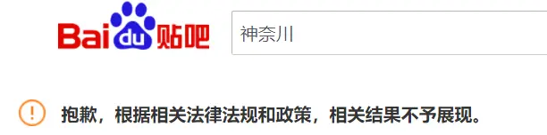
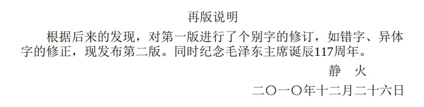

最近的互联网不安稳啊，一些路人们，是不是在2020年中总是看到一些tag里夹着缝合，抽象，神友，兔友这些不明所以的东西呢？
如果您没有接触过神友，这边建议搜索【典中典】【北欧】【战斧牛排】呢。
或者搜素up主，那些名字里带有【安】【神】【晶】
这位就是缝合的典型代表
如果是左圈，建议搜一下知名up【万里河山红烂漫】【我是小茗同志】，属于比较有纯洁性的左人了，最近出现了很多沾点缝合的左人，不知道是不是左圈经典内战的产物。
音乐区的一股清流
召唤方式：国际歌
可能部分路人看到这里还是啥也没懂，没事，我们从各个圈子的起源开始讲起：
观测者视角：在互联网早期，交流环境相对自由的情况下，一部分有着不同思想的人开始发表一些不符合时代潮流的言论，他们主要活动在贴吧
所谓的神友起源是【神奈川】吧的一些分子，神奈川是日本的一个地方，这也可以看出神友的核心思想【向往外国的自由，批判内部的不自由】，他们主要地和【那兔那年那些事】吧为首的兔友对立
物是人非
气氛很足
和神友完全相反，兔友的政治意见当然只会是【祖国比外国好】
兔友还在【军武次面】吧和【bilibili】【抖音】中大量存在，神友的数量和他们比完全是大海里的沙子。
只会，随着【神奈川】因为众所周知的原因被封禁，神友们开始了流浪，但是他们似乎到哪都不受待见，毕竟谁到不想自己的论坛被爆破。
贴上神兔著名梗【差不多得了】和它的缝合形态【差不多得了😅】【麻了】
【战斧牛排】和【洋芋】出自一个采访视频和一个视频主的截图，一个是小孩早中晚吃洋芋，一个是一条狗（格林，后来又多了一个马克）吃战斧牛排，形成强大的贫富反差
【这就是中国】来源张维为的节目这就是中国，一部评价中国的交谈片，兔友的圣经，神友的玩梗制造者，一张经典图片：张老师说谈，有什么不能谈，下面是当前评论区已关闭（这波和叔叔配合得不是很好）
【北欧】北欧的福利制度正是神友向往的自由世界的最高形态，因此他们常说run到北欧
【还不是你不努力】【背后原因令人暖心】梗来源：央视，央视在十年前经常在一些贫苦人民的新闻中加入类似的评价，现在被用于嘲笑官方掩盖贫富差距的样子
观测者认为：神友在思想层面上高于兔友一点。
原因：神友一定程度地指出了社会的负面问题。当然也有人指出，这类人属于【神友】
极端的投降主义属于【神蛆】极端爱国属于【兔蛆】这种分类也有一定道理。
早期的神友，那些纯粹的思想者，带有一点安其那的色彩，他们所持有的安其拉色彩的思想，实际上是源于1989年北京事件后续者的一种思想继承。
一开始，他们是一种纯粹的右的投降主义，盲目的投降西方帝国的自由派，后来的【浪人】到【神友】
从产生性质上在早期之所以带有安主义的色彩是因为，他们的产生源于对社会不公平的压力的不满
而不是纯粹的一种观点【共产党的专制的不满】，但是随着后来神友的出圈和其亚文化圈的产生，很多跟风的神友完全脱离了安主义，也脱离了纯粹的自由派
而是一种建立对立观点的不同思想派别。
或者说，在早期的队社会反抗的部分群体在发展成神友前还没有神味，是一些左派趁着网络监管不完善时搞得舆论宣传而适得其反产生的
比如当今左人口口相传的七卷毛选的作者【静火】便是2009年完稿，微博用户【红卒】在2013年就开始左派运动，另一个分支安主义也能追溯到2011，当时一些受到【V仇】影响的年轻人开始在【V仇】吧活动，随后转战到【V】吧，其时间之早甚至早于【毛】吧和【马哲】吧，可见最早的神友的老祖宗竟然是左人！

那么问题来了，马主义的那一部分左人后来怎么样了呢？
观测者视角：根据北大马研会前会长付女士提供的材料，最早开展左的运动的人还不是学生，而是一些鸟笼经济派的制度内部的人，包括影视界的戴锦华。
2009年是一个重要节点，不仅是七卷毛选的出世，更是在北京发生时任公安局长周永康和时任主席胡锦涛冲动的事件
可见那时矛盾就不断加剧到了不得不封锁信息的地方，之后互联网管理不断加强，监管和法权政策频繁出，一定程度地稳定了局势。
2016年，一大群综合教育健全的90后00后登上了互联网jz的舞台，几名著名up给一开始的站用户提供了一些原始的思想武器，也造就了一批有头脑的兔友（著名up指【观察者网】【观视频工作室】）
这批人算是比较幸运，他们他们接触的算是优质的资源，后来的b站用户很容易先接触【半佛】【罗翔】这种片面的浅层的up学习，正因如此后来者左转难度明显增大。
2019年末，随着疫情爆发，在武汉政府势力，红十字会曝光，和学生有时间脱离应试教育接触社会百态的各种因素下，网络左派运营而生，他们中的一部分技术人员找到了先辈留在互联网上的蛛丝马迹。
其中，【马哲】吧对资料的提供和宣传起到了很关键作用。【毛泽东】吧在10月以后也慢慢壮大，引流了不少人。
并将他们传播开来，在2020年3月左右建立起一支庞大的左派队伍，无组织，有纪律是我对他们的评价。
左派在政治上诉求基本可以概括为【恢复祖国前30年的基本制度】这也是把他们和神兔区别的核心方法
当然，具体措施来讲，大部分左人更希望对那些制度批判继承，但是总的来说，他们是不赞成目前的路线的
按照左派的逻辑，他们和神兔应该是完全对立的，因为兔友的全肯定属于right机会主义，神友的全否定属于right投降主义
左派不仅仅是单纯的要求对过去制度的复刻，他们是一群以建设真正共产主义，完成人类理想为指导的热情分子，对【后四十年】的制度和经济变化
做出批判的思想者，他们的只要指导思想是以【马恩列毛】四位导师观点为核心的斗争路线。
正如世界历史上所有左派运动发展的那样，网左在发展和引流的过程中出现了各种路线分歧
【安马分歧】无政府主义和共产主义一直以来的矛盾
【民族主义分歧】是阶级问题大于民族问题还是民族问题大于阶级问题的矛盾，这就属于左派中缝合了玩梗兔友
【纯洁性和团结性问题】排斥外部还是团结外部的矛盾：已知道的左派主要活动场所【网易云】【bilibili】【QQ】群【毛】吧【nga】，他们都有一个共识性问题：玩梗宅左算不算做？神左算不算左？抽象共趣左算不算左？
【宅左】清楚左派的基本目标，不喜欢了解相关理论和著作，喜欢在弹幕，评论区中刷经典语录
【神左】重新披上点安其那的色彩，一些神友见左人也批判就当作了队友跟上，缝合出一种神左梗都玩的究极缝合怪
【共趣】对相关事物感兴趣，喜欢刷著名语录，更喜欢改变语录使其达到娱乐效果
一部分人认为要实践出真知们，了解每个群体的形成逻辑来团结，一部分人认为每个群体只是认识不到位，要对其做直接教育来团结，一部分人认为其没有纯洁性，不能团结，左人们自己探讨一下，本文不做评价。
观测者评价：左人的诞生和壮大都有起历史的必然性和偶然性结合，他们和神友一样都是对社会改造有着强烈愿望的社会群体 他们玩得梗一定程度表现了一种观点的正确性在不断被证明，当然任何玩梗，到最后都有发展成魔怔缝合的可能，
随着玩梗浓度的增大，一些神兔左右的玩梗亚文化也开始出现，比如很多引流赵丹的神友发言，有时候也被当作玩梗，很多人回复什么【太哈人了】就过去了。
作为观测者不能对这些现象做出太过主观的评价，还请各位根据本文内容寻找相关资料自行判断。
如果有错误请评论指出，本文不对左右神兔的观点发表过多意见。